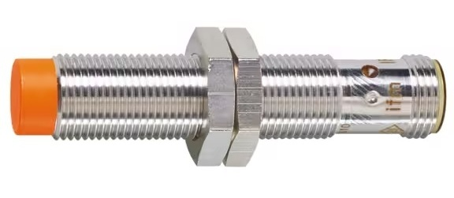
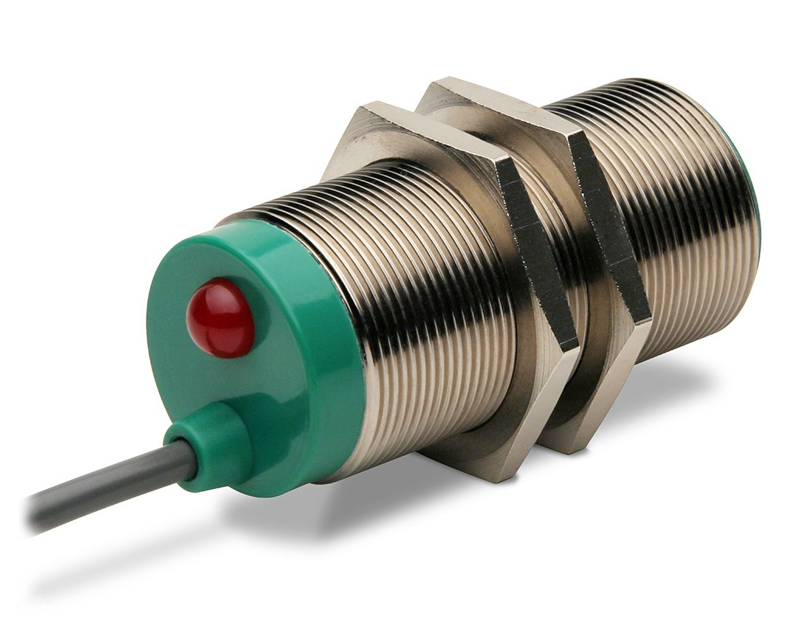
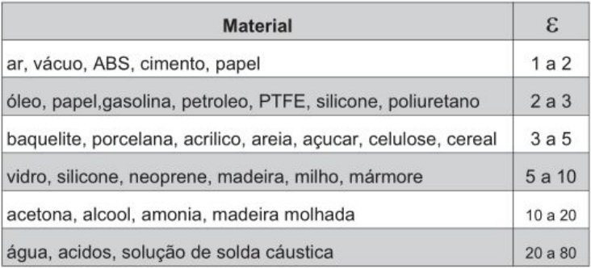
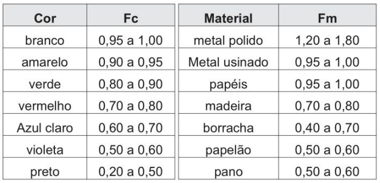
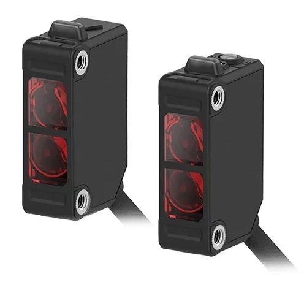
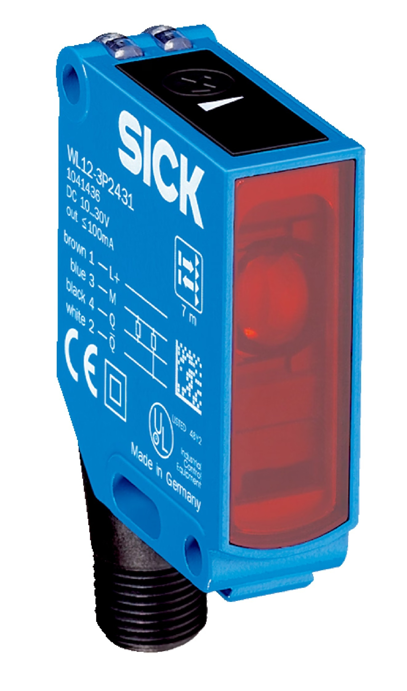
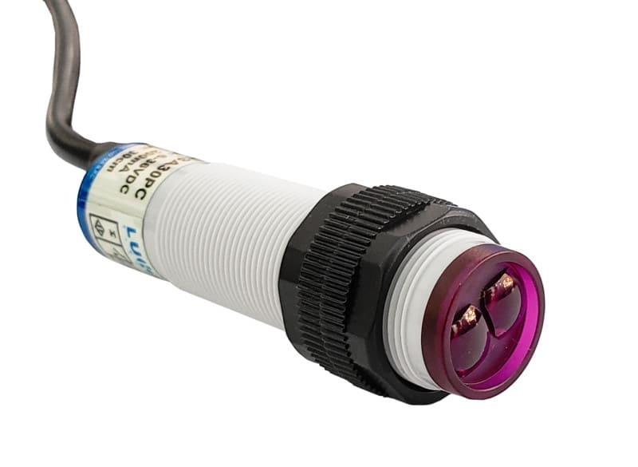

SENSORES INDUSTRIAIS
Sensores
Sensores são dispositivos sensíveis a alguma forma de energia do ambiente, como luz, calor, som, velocidade ou força, fornecendo informações relacionadas a uma grandeza que precisa ser medida.
Entre as grandezas que podem ser medidas estão temperatura, pressão, velocidade, vazão, corrente, aceleração, posição, viscosidade, umidade e pH.
Classificação dos Sensores
SENSORES DIGITAIS ou BINÁRIOS
Possuem uma saída que assume dois estados lógicos, 0 ou 1, caracterizando uma saída do tipo liga-desliga.
Exemplos: chaves fim de curso, sensores indutivos, capacitivos e ópticos.
SENSORES ANALÓGICOS
Possuem uma saída contínua, relacionada à grandeza física presente na entrada.
NPN, PNP, NA e NF
PNP
No chaveamento PNP (Sourcing), ao detectar o objeto, o sensor envia o potencial positivo (+Vcc) para a carga ou para a entrada do CLP.
NPN
No chaveamento NPN (Sinking), ao detectar o objeto, o sensor conecta a carga ao polo negativo (0 V/GND).
NA e NF
NA significa Normalmente Aberto e NF significa Normalmente Fechado. Essas denominações indicam o estado normal do contato do dispositivo.
Fluxo da Informação em Sensores
Sensor → Conversão da Variável → Processamento do Sinal → Transmissão da Informação → Apresentação da Informação
Sensores Indutivos
Sensores indutivos são equipamentos eletrônicos capazes de detectar a aproximação de peças metálicas.
A detecção ocorre sem contato físico entre o sensor e o acionador, aumentando a vida útil do sensor.

Adaptado de: IMF - Sensor indutivo - IF7103PRINCÍPIO DE FUNCIONAMENTO
O funcionamento baseia-se na geração de um campo eletromagnético de alta frequência na face sensora, produzido por uma bobina interna associada a um circuito oscilador.
Quando um objeto metálico aproxima-se da face sensora, correntes parasitas (correntes de Foucault) são induzidas em sua superfície, absorvendo energia do campo e reduzindo a amplitude das oscilações.
Um circuito avaliador interno detecta essa diminuição na amplitude e comuta o sinal elétrico de saída do sensor.
APLICAÇÕES E ESPECIFICAÇÕES
• Aplicações Principais: Detecção de engrenagens, contagem de peças metálicas em esteiras, controle de fim de curso em máquinas CNC (Comando Numérico Computadorizado) e monitoramento de posicionamento de válvulas.
• Materiais Detectáveis: Apenas materiais condutores/metálicos (aço, alumínio, latão, cobre, etc.).
• Principais Especificações: Alta imunidade a sujeira, óleos e umidade; alcance de detecção curto (normalmente de 1 mm a 50 mm); alta durabilidade e frequência de comutação elevada.
Sensores Capacitivos
Sensores de proximidade capacitivos são equipamentos eletrônicos capazes de detectar a presença ou aproximação de materiais como orgânicos, plásticos, pós, líquidos, madeiras e papéis.

Adaptado de: WEG - Sensores de proximidade capacitivosPRINCÍPIO DE FUNCIONAMENTO
O funcionamento baseia-se na geração de um campo eletrostático na face sensora, criado por eletrodos metálicos integrados ao circuito interno. O sensor atua essencialmente como um capacitor aberto.
Quando qualquer objeto (metálico ou não metálico) entra no campo eletrostático, ele altera a constante dielétrica do meio, provocando um aumento na capacitância (C) do circuito oscilador.
Essa alteração de capacitância eleva a amplitude de oscilação do circuito. Um detector interno identifica essa variação e comuta o sinal elétrico de saída do sensor.
MATERIAL A SER DETECTADO

A tabela mostra uma comparação das características dielétricas de diferentes materiais e indica a realização de testes para determinar a distância sensora para o acionador utilizado.
PERMISSIVIDADE ELÉTRICA NO VÁCUO (Ε₀)
A permissividade elétrica no vácuo é uma constante fundamental utilizada nos princípios físicos dos sensores capacitivos.
ε₀ ≈ 8,854 × 10⁻¹² F/m
A unidade de medida é farad por metro (F/m).
APLICAÇÕES E ESPECIFICAÇÕES
• Aplicações Principais: Controle de nível de líquidos em reservatórios não metálicos, detecção de grãos e pós em silos, contagem de embalagens de papelão/plástico e verificação do conteúdo dentro de caixas fechadas.
• Materiais Detectáveis: Materiais metálicos e não metálicos (água, óleo, plástico, vidro, madeira, alimentos, etc.).
• Principais Especificações: Possui trimpot para ajuste de sensibilidade; distância sensora de curto a médio alcance (2 mm a 25 mm); requer atenção com acúmulo de umidade e resíduos na face sensora.
Sensores Ópticos (Fotoelétricos)
Sensores ópticos baseiam-se na transmissão e recepção de luz, que pode ser refletida ou interrompida por um objeto a ser detectado.
TRANSMISSOR
O transmissor envia o feixe de luz através de um fotodiodo, que emite flashes com alta potência e curta duração. Isso ajuda a evitar que o receptor confunda a luz emitida com a iluminação ambiente.
RECEPTOR
O receptor é composto por um fototransistor sensível à luz. Em conjunto com um filtro sintonizado na mesma frequência de pulsação dos flashes do transmissor, permite que o receptor reconheça a luz proveniente do transmissor.
COR E MATERIAL DO ACIONADOR (Sensor Óptico Difuso)

• Alta Refletividade: Cores claras e superfícies metálicas polidas mantêm ou aumentam a distância de detecção nominal do sensor.
• Alta Absorção: Cores escuras e materiais porosos/opacos absorvem a luz emitida, reduzindo drasticamente o alcance útil.
• Cálculo do Alcance Real: O alcance real (Sᵣ) é obtido multiplicando o alcance nominal (Sₙ) fornecido pelo fabricante pelos fatores correspondentes: Sᵣ = Sₙ × F꜀ × Fₘ
SENSOR ÓPTICO POR BARREIRA (THROUGH-BEAM)

Adaptado de: Autonics - Sensor Tipo Barreira - BJX15M-TDT-P• Princípio de Funcionamento: O transmissor e o receptor são montados em corpos separados e instalados de frente um para o outro. A detecção ocorre no momento em que o objeto passa entre eles e interrompe o feixe de luz contínuo.
• Características: Oferece o maior alcance de detecção entre todos os tipos (chegando a dezenas de metros) e alta precisão. É imune à cor, textura ou brilho do objeto, exigindo apenas que o material seja opaco à luz.
• Exemplo de Aplicação: Detecção de veículos em cancelas de pedágio, contagem de grandes volumes em esteiras e sistemas de segurança industrial.
SENSOR ÓPTICO RETRORREFLEXIVO

Adaptado de: Sick - Sensor Retrorreflexivo - WL12-3P2431• Princípio de Funcionamento: O transmissor e o receptor ficam no mesmo corpo. O sensor projeta a luz contra um espelho prismático refletor instalado no lado oposto, que devolve a luz ao receptor. O objeto é detectado quando interrompe essa trajetória de luz refletida.
• Características: Facilita a instalação elétrica, pois só requer fiação em um dos lados da linha. Possui alcance intermediário e pode utilizar filtros polarizados para evitar falsos acionamentos por objetos muito brilhantes.
• Exemplo de Aplicação: Linhas de envase de garrafas, detecção de paletes e sistemas de transporte onde não é viável passar cabos para o lado oposto.
SENSOR ÓPTICO DIFUSO

Adaptado de: Cetti - Sensor de Proximidade Óptico Difuso 24V PNP 300mm 1NA M18 G18-3A30PC• Princípio de Funcionamento: O transmissor e o receptor encontram-se no mesmo invólucro e não utilizam espelhos externos. O feixe luminoso é emitido e reflete diretamente na superfície do próprio objeto a ser detectado, retornando ao receptor.
• Características: É o modelo mais simples e rápido de instalar. No entanto, possui o menor alcance útil e seu funcionamento é totalmente dependente das características do objeto (cor, rugosidade e refletividade do material).
• Exemplo de Aplicação: Identificação da presença de peças pequenas em células robotizadas, detecção de caixas próximas e verificação de nível de preenchimento.
APLICAÇÕES E ESPECIFICAÇÕES
• Aplicações Principais: Contagem de itens em alta velocidade, linhas de embalagem, leitura de marcas de contraste/rótulos e cortinas de luz para proteção de operadores.
• Materiais Detectáveis: Qualquer objeto sólido ou opaco (ou transparentes quando utilizados sensores com refletores/filtros específicos).
• Principais Especificações: Maior alcance entre os sensores de proximidade (até dezenas de metros no modo Barreira); resposta extremamente rápida; sensível ao acúmulo de poeira ou névoa nas lentes ópticas.
Face Sensora
A face sensora é a área física frontal do sensor a partir da qual o campo de detecção é emitido e captado. Esse campo pode ser eletromagnético, eletrostático, óptico ou acústico, dependendo do princípio de funcionamento.
O termo é utilizado especificamente para sensores de proximidade, como sensores indutivos, capacitivos, fotoelétricos e ultrassônicos.
Distância Sensora (Sₙ)
A distância sensora nominal (Sₙ) é a distância nominal máxima na qual o sensor detecta a presença de um alvo padrão alinhado à sua face sensora.
Alvo Padrão (Standard Target)
O alvo padrão é um objeto normalizado utilizado pelo fabricante para medir e especificar a distância sensora nominal (Sₙ).
Sensores Indutivos
Para sensores indutivos, o alvo padrão é uma chapa quadrada de aço carbono (FE 360 / SAE 1020), com 1 mm de espessura e lado igual ao diâmetro da face sensora ou 3 × Sₙ, considerando o que for maior.
Sensores Capacitivos
Para sensores capacitivos, o alvo padrão é uma chapa quadrada de aço carbono (FE 360 / SAE 1020) aterrada, com 1 mm de espessura e lado igual ao diâmetro da face sensora ou 3 × Sₙ, considerando o que for maior.
Sensores Ópticos
• Para sensores ópticos difusos, o alvo padrão é um papel branco fosco com 90% de refletância (Kodak White), com formato quadrado de 100 mm × 100 mm ou 200 mm × 200 mm, conforme a faixa de alcance nominal (Sₙ).
• Para sensores ópticos retrorreflexivos, o alvo padrão é um refletor catadióptrico (espelho prismático) de modelo e dimensões especificados pelo fabricante.
• Para sensores ópticos do tipo barreira, o alvo padrão é o próprio receptor óptico (para o teste de alcance) ou um corpo opaco com dimensão mínima especificada pelo fabricante para a interrupção do feixe.
Fator de Atenuação / Fator de Correção
É um multiplicador, geralmente menor que 1, aplicado à distância sensora nominal para determinar o alcance real de detecção quando o objeto é constituído de material diferente do alvo padrão.
• Aço carbono: 1,0 (100% da distância Sₙ)
• Aço inoxidável: aproximadamente 0,60 a 0,80
• Latão: aproximadamente 0,35 a 0,50
• Alumínio: aproximadamente 0,30 a 0,45
• Cobre: aproximadamente 0,25 a 0,40
A alteração do alcance ocorre devido às propriedades elétricas e magnéticas dos diferentes materiais.
Relação entre os Principais Sensores
Os sensores indutivos, capacitivos e ópticos são sensores de proximidade abordados na apresentação, mas utilizam princípios diferentes para realizar a detecção:
• Indutivo: utiliza um campo eletromagnético e é destinado à detecção de peças metálicas.
• Capacitivo: detecta a presença ou aproximação de diferentes materiais, considerando suas características dielétricas.
• Óptico: utiliza transmissão e recepção de luz, podendo detectar objetos por reflexão ou interrupção do feixe.